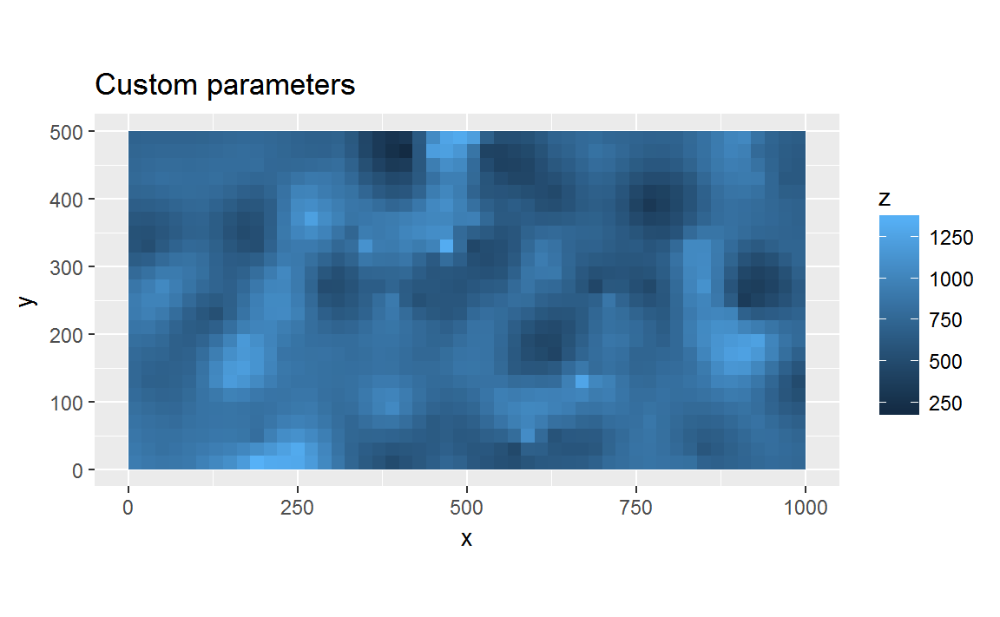
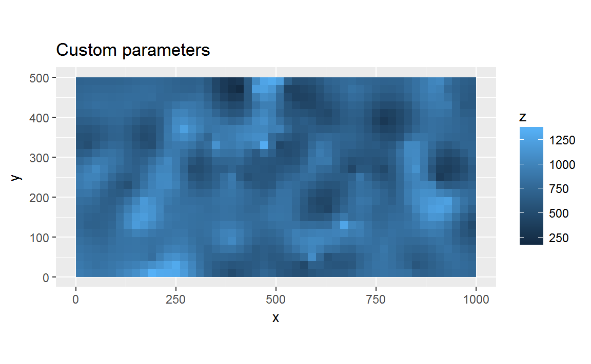

library(fgeo.habitat)
library(ggplot2)
library(dplyr)
#>
#> Attaching package: 'dplyr'
#> The following objects are masked from 'package:stats':
#>
#> filter, lag
#> The following objects are masked from 'package:base':
#>
#> intersect, setdiff, setequal, unionHabitat-species associations
Torus translation test to determine habitat associations of tree species: tt_test(), by Sabrina Russo, Daniel Zuleta, Matteo Detto, and Kyle Harms.
# Example data
habitat <- luquillo_habitat
census <- luquillo_top3_sp
# Pick alive trees, of 10 mm or more
pick <- filter(census, status == "A", dbh >= 10)
# Pick sufficiently abundant trees
pick <- add_count(pick, sp)
pick <- filter(pick, n > 50)
species <- unique(pick$sp)
out <- tt_test(species, census, habitat)
# Try also: View(out)
head(out)
#> metric sp value
#> 1 N.Hab.1 CASARB 25.000000
#> 2 Gr.Hab.1 CASARB 1489.000000
#> 3 Ls.Hab.1 CASARB 109.000000
#> 4 Eq.Hab.1 CASARB 2.000000
#> 5 Rep.Agg.Neut.1 CASARB 0.000000
#> 6 Obs.Quantile.1 CASARB 0.930625
tail(out)
#> metric sp value
#> 67 N.Hab.4 SLOBER 17.000000
#> 68 Gr.Hab.4 SLOBER 1151.000000
#> 69 Ls.Hab.4 SLOBER 440.000000
#> 70 Eq.Hab.4 SLOBER 9.000000
#> 71 Rep.Agg.Neut.4 SLOBER 0.000000
#> 72 Obs.Quantile.4 SLOBER 0.719375Krige soil data
Krige soil data following the methodology of the John et al. (2007): krig() by Graham Zemunik.
# Krige with automated parameters
auto <- krig(soil, var = "M3Al")
#> variog: computing omnidirectional variogram
#> variofit: covariance model used is exponential
#> variofit: weights used: npairs
#> variofit: minimisation function used: optim
#> variofit: covariance model used is circular
#> variofit: weights used: npairs
#> variofit: minimisation function used: optim
#> variofit: covariance model used is cauchy
#> variofit: weights used: npairs
#> variofit: minimisation function used: optim
#> variofit: covariance model used is gaussian
#> variofit: weights used: npairs
#> variofit: minimisation function used: optim
#> ksline: kriging location: 1 out of 1250
#> ksline: kriging location: 101 out of 1250
#> ksline: kriging location: 201 out of 1250
#> ksline: kriging location: 301 out of 1250
#> ksline: kriging location: 401 out of 1250
#> ksline: kriging location: 501 out of 1250
#> ksline: kriging location: 601 out of 1250
#> ksline: kriging location: 701 out of 1250
#> ksline: kriging location: 801 out of 1250
#> ksline: kriging location: 901 out of 1250
#> ksline: kriging location: 1001 out of 1250
#> ksline: kriging location: 1101 out of 1250
#> ksline: kriging location: 1201 out of 1250
#> ksline: kriging location: 1250 out of 1250
#> Kriging performed using global neighbourhoodsummary(auto)
#> df
#> 'data.frame': 1250 obs. of 3 variables:
#> $ x: num 10 30 50 70 90 110 130 150 170 190 ...
#> $ y: num 10 10 10 10 10 10 10 10 10 10 ...
#> $ z: num 825 826 826 827 828 ...
#>
#> df.poly
#> 'data.frame': 1250 obs. of 3 variables:
#> $ gx: num 10 30 50 70 90 110 130 150 170 190 ...
#> $ gy: num 10 10 10 10 10 10 10 10 10 10 ...
#> $ z : num 825 826 827 828 829 ...
#>
#> nm
#> 'numeric'
#> num 1
#>
#> nm
#> 'variogram'
#> List of 20
#> $ u : num [1:15] 25.4 30.3 36 42.9 51.1 ...
#> $ v : num [1:15] 52791 54636 65742 58004 49142 ...
#> $ n : num [1:15] 66 1110 73 1101 61 ...
#> $ sd : num [1:15] 64847 75753 89509 79157 63291 ...
#> $ bins.lim : num [1:31] 1.00e-12 2.00 2.38 2.84 3.38 ...
#> $ ind.bin : logi [1:30] FALSE FALSE FALSE FALSE FALSE FALSE ...
#> $ var.mark : num 55269
#> $ beta.ols : num -1.71e-08
#> $ output.type : chr "bin"
#> $ max.dist : num 320
#> $ estimator.type : chr "classical"
#> $ n.data : int 625
#> $ lambda : num 1
#> $ trend : chr "cte"
#> $ pairs.min : num 5
#> $ nugget.tolerance: num 1e-12
#> $ direction : chr "omnidirectional"
#> $ tolerance : chr "none"
#> $ uvec : num [1:30] 1 2.19 2.61 3.11 3.7 ...
#> $ call : language variog(geodata = geodata, breaks = breaks, trend = trend, pairs.min = 5)
#>
#> nm
#> 'variomodel', variofit'
#> List of 17
#> $ nugget : num 56607
#> $ cov.pars : num [1:2] 40008 1533
#> $ cov.model : chr "cauchy"
#> $ kappa : num 0.5
#> $ value : num 6.38e+10
#> $ trend : chr "cte"
#> $ beta.ols : num -1.71e-08
#> $ practicalRange : num 30614
#> $ max.dist : num 320
#> $ minimisation.function: chr "optim"
#> $ weights : chr "npairs"
#> $ method : chr "WLS"
#> $ fix.nugget : logi FALSE
#> $ fix.kappa : logi TRUE
#> $ lambda : num 1
#> $ message : chr "optim convergence code: 0"
#> $ call : language variofit(vario = vg, ini.cov.pars = c(initialVal, startRange), cov.model = varModels[i], nugget = initialVal)
glimpse(auto$df)
#> Observations: 1,250
#> Variables: 3
#> $ x <dbl> 10, 30, 50, 70, 90, 110, 130, 150, 170, 190, 210, 230, 250, ...
#> $ y <dbl> 10, 10, 10, 10, 10, 10, 10, 10, 10, 10, 10, 10, 10, 10, 10, ...
#> $ z <dbl> 824.5186, 825.5012, 826.4549, 827.3795, 828.2749, 829.1410, ...# These custom params are rather arbitrary but based on automated kriging params
params <- list(
model = "circular", range = 100, nugget = 1000, sill = 46000, kappa = 0.5
)
custom <- krig(soil, var = "M3Al", params = params)
#> ksline: kriging location: 1 out of 1250
#> ksline: kriging location: 101 out of 1250
#> ksline: kriging location: 201 out of 1250
#> ksline: kriging location: 301 out of 1250
#> ksline: kriging location: 401 out of 1250
#> ksline: kriging location: 501 out of 1250
#> ksline: kriging location: 601 out of 1250
#> ksline: kriging location: 701 out of 1250
#> ksline: kriging location: 801 out of 1250
#> ksline: kriging location: 901 out of 1250
#> ksline: kriging location: 1001 out of 1250
#> ksline: kriging location: 1101 out of 1250
#> ksline: kriging location: 1201 out of 1250
#> ksline: kriging location: 1250 out of 1250
#> Kriging performed using global neighbourhood
glimpse(custom$df)
#> Observations: 1,250
#> Variables: 3
#> $ x <dbl> 10, 30, 50, 70, 90, 110, 130, 150, 170, 190, 210, 230, 250, ...
#> $ y <dbl> 10, 10, 10, 10, 10, 10, 10, 10, 10, 10, 10, 10, 10, 10, 10, ...
#> $ z <dbl> 948.5484, 998.4360, 964.1424, 1106.1318, 1009.1208, 837.4170...# Have a look at the differences
title_auto <- "Automated parameters"
ggplot(auto$df, aes(x = x, y = y, fill = z)) +
geom_tile() +
coord_equal() +
labs(title = title_auto)
title_custom <- "Custom parameters"
ggplot(custom$df, aes(x = x, y = y, fill = z)) +
geom_tile() +
coord_equal() +
labs(title = title_custom) 
